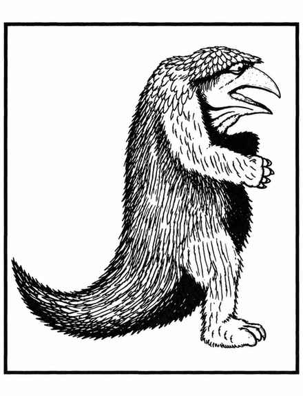

枭熊 · Owlbear
 |
|
枭熊很可能是某个疯狂巫师进行遗传实验的产物，生活在温带各地的纠缠森林与地下迷宫中。它们贪食、凶猛，脾气暴躁，看到猎物就会攻击并战斗至死。
枭熊先用巨大爪子（大型雄性的爪长 2 寸）和喙攻击，随后抓住目标，以挤压和撕咬置其于死地。若任一前肢的爪击生命骰结果为 18 或更高，目标会被拖到身前，承受拥抱伤害；该轮及之后每轮额外受到 2–16 点伤害，直到枭熊死亡。若目标的护甲等级使 18 也不足以命中，则拥抱不会生效。
若在巢穴中发现枭熊，有 25% 的机会除成年个体外还有 1–6 枚鸟蛋（20%）或幼体（80%）。幼体成长到 40%–70%，并按相应能力战斗。鸟蛋价值 2,000 金币；成长不足 50% 的幼体市价 5,000 金币。枭熊的毛与羽色从棕黑到黄棕不等，雄性体重 1,300–1,500 磅且颜色更深；喙从黄色到象牙色，双眼红边鲜明而可怕。